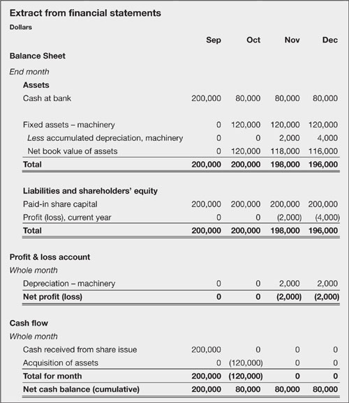

Begin by looking at how a beanie would want you to account for fixed assets in, say, a monthly financial projection. Suppose that in October you acquire a squeezing machine for $120,000 cash; it has an expected life of five years (60 months), no residual value, and so you write it off in 60 equal instalments. The accounting entries are as follows:
In October you debit fixed assets – machinery $120,000 and credit cash at bank by the same amount.
Every month commencing in November you debit $2,000 ($120,000 divided by 60 months) to the expenditure account depreciation of machinery and credit the asset account fixed assets – depreciation of machinery with the same amount.
Beanies, and by osmosis senior executives, tend to abbreviate the term capital expenditure to CapEx. The assets acquired are often known as fixed assets (even though they are not fixed in the physical sense). A subset of such assets is sometimes referred to as PPE – property, plant and equipment. The other major division is intellectual property – goodwill, patents, etc.
Acquisition, 25 Oct
|
Depreciation, 30 Nov
|
At the end of the first year:
the (original) booked value is $120,000;
the accumulated depreciation is $4,000 (two months’ depreciation);
the written-down, or net book value, is $116,000 ($120,000 less $4,000); and
your production or operating costs for the year include $4,000 in depreciation.
If the only other transaction in the year was a $200,000 issue of shares, the financial transactions for September to December would be those illustrated in Fig. 11.1. Note how the balance sheet shows cumulative, end-month balances on asset, liability and shareholders equity accounts (you might want to refer back to the chart of accounts in Chapter 7), while the profit and loss account and cash flow statement both show totals for the month. Don’t worry, I’ll explain this in Chapter 15.

This, essentially, is all there is to accounting for fixed assets. Although, in case you thought you were getting off lightly, there are some management issues that we should discuss. For the purposes of bean counting, the four main things that you have to consider, and which we will discuss below, are:
acquisition costs, including delivery, installation, etc.
expected life
expected residual value
depreciation policy.
For tax purposes, depreciation in the year that you acquire an asset is often derived by some rule of thumb – such as 50% of whole -year depreciation regardless of the date on which the spending occurred.